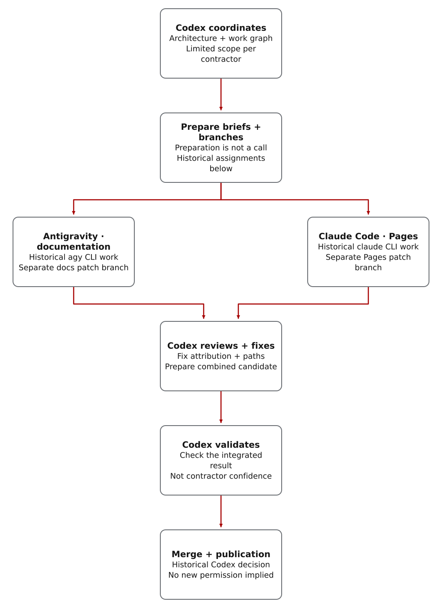

What the demo built
The demo repository is a small static site, intentionally simple enough that the contractor workflow is the subject. Codex created the baseline project, posted Beads-backed assignments, dispatched two outside tools through manual prompts, reviewed both returns, repaired public-doc issues, integrated accepted work, and published GitHub Pages.
The request that started the demo
The prompt below illustrates how the demo was set up. It is retained with its historical role names and commands, not as a current dispatch recipe. For a new assignment, follow the current outside-review guide.
/plan Use $complex-work-orchestration prompt coach for a hello-world contractor demo:
Beads graph, Codex PM + review, agy -p docs branch, claude -p Pages branch.
Ask before external sharing; choose subagent parallelism; set validation + publish gates.The historical procedure called for a saved task graph, one outside-review task and separate branch or worktree per tool, followed by review before integration. The retained commands illustrate that procedure; they do not establish that the same tools or permissions are available now.
Access needed before calling the outside tools
The Codex runtime account must be able to invoke the approved
contractor CLIs, such as agy -p and
claude -p, or it must have operator-approved privilege escalation
to an operating-system account that can run those commands.
That escalation is prearranged environment setup; Codex should
not discover, mint, or own credential escalation while launching
the contract.
Without that access, Codex can still prepare a
packet and rendered prompt, but the actual dispatch becomes a
separate operator action.
Keep access details private: do not publish account names, private paths, privilege rules, hostnames or account-specific command transcripts.
Who did which work
Each outside tool received one limited assignment and its own branch. Codex kept responsibility for architecture, task coordination, integration, validation and publication. Using two tools was not, by itself, evidence of quality.

Read the diagram as text
- In this historical demo, Codex retained architecture and task coordination and prepared separate limited briefs and patch branches. Preparation alone was not a contractor invocation.
- Antigravity performed the documentation assignment through the historical agy CLI route. Claude Code performed the Pages assignment through its historical CLI route. Separate ownership branches do not establish concurrent execution.
- Codex reviewed the returned work, corrected attribution and path issues, assembled a combined candidate and validated it before merging.
- After acceptance, Codex merged the changes and retained the historical publication decision. These historical actions are not current permission for another dispatch, merge or publication.
Coordinating Codex agent
Created the work graph, packet artifacts, dispatch prompts, review comments, merge decisions, and final evidence.
Antigravity
Used the agy CLI as an outside contractor on a documentation patch branch and returned a bounded docs update.
Claude Code
Worked on a Pages patch branch through a claude -p prompt and returned a bounded site update.
Review before integration
Codex reviewed contractor output, fixed attribution and path issues, ran validation, and only then merged.
Preparing a prompt was separate from calling a model
The historical procedure separated packet preparation from the model call. The project manager created a task and checked brief, then rendered a manual prompt for an approved CLI. Rendering alone did not call the model. Use the current packet procedure for a new assignment.
python3 scripts/build_contractor_packet.py \
--bead "$BEAD_ID" \
--executor claude_code_manual \
--share-boundary patch-branch \
--allow-disclosure-escalation \
--external-ok \
--format json \
--output contractor-packet.json
python3 scripts/dispatch_work.py \
--packet contractor-packet.json \
--mode manual \
> contractor-dispatch-prompt.mdThe demo guide prescribed a separate worktree or branch per contractor and repository commands running as the repo owner. Its CLI instructions named the intended directory, branch, allowed paths and command limits. The historical checklist also required workspace snapshots before and after the call. The guard commands below retain their original form; add --include-untracked to both calls when new files must count. These are procedure notes, not permission to arrange new account access or repeat the calls.
python3 scripts/workspace_mutation_guard.py \
--snapshot \
--output before.json
agy -p "$(cat contractor-dispatch-prompt.md)" \
> contractor-return.md
python3 scripts/workspace_mutation_guard.py \
--compare before.json \
--output mutation-report.jsonHow returned work was checked
Contractor output is evidence, not authority. Normalize and evaluate returns before using the work. Parser or heuristic failures should trigger architect review; they are not automatic proof that the patch is bad, and they are not permission to skip review.
python3 scripts/normalize_contractor_return.py \
--bead "$BEAD_ID" \
--dispatch-id "$DISPATCH_ID" \
--packet-sha256 "$PACKET_SHA256" \
--file contractor-return.md \
--workspace-mutation-report mutation-report.json \
--output contractor-return-bundle.json
python3 scripts/evaluate_return.py \
--bead "$BEAD_ID" \
--file contractor-return.md \
--workspace-mutation-report mutation-report.json
The demo exposed two practical quality gates. Return headings
should use the canonical labels expected by the evaluator, and
unexpected tracked-file mutation should block direct use until
architect review. Public docs also need a human editor pass for
incorrect attribution, absolute paths,
file:// links, fabricated validation claims, and
unclear ownership.
The final handoff also needs a closure-memory comment before meaningful Beads close. That short comment should preserve the disposition, rationale, evidence, residual risk, and follow-up so a later agent can understand what was accepted or rejected.
What was checked before publication
The historical acceptance checklist required local validation, public-copy checks, publish sanitization, CI status, Pages deployment, live HTTP checks and saved task evidence. The list below describes those required checks; it is not a new execution result or proof that each item ran against the current source.
- Local validators before merging contractor branches.
- A tracked-file scan for private paths, local URLs, tokens and private-key markers.
- Saved decisions on accepted and rejected findings.
- Closure of publication only after CI, deployment and live content checks.
- An explicit local-only status when Beads had no Dolt remote.